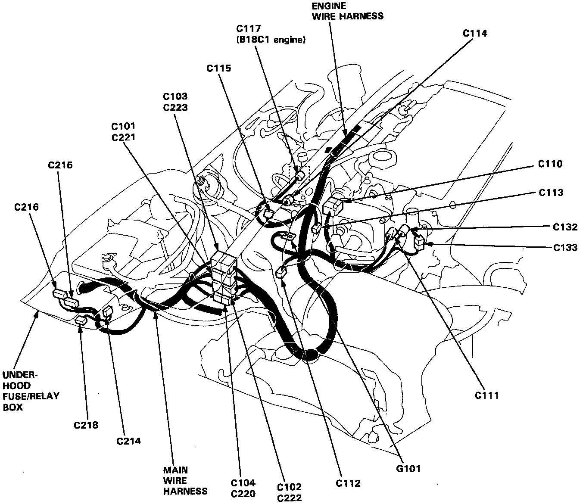
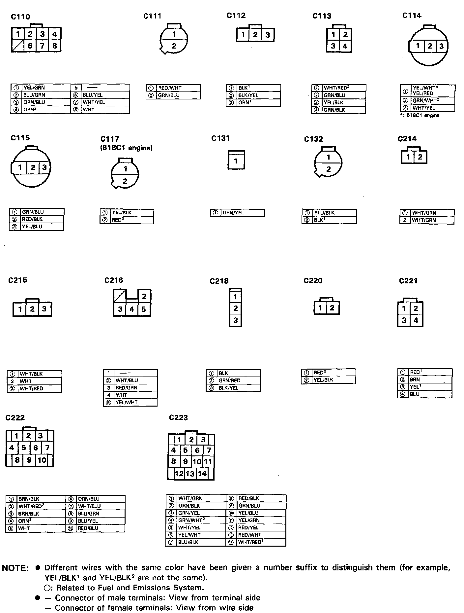
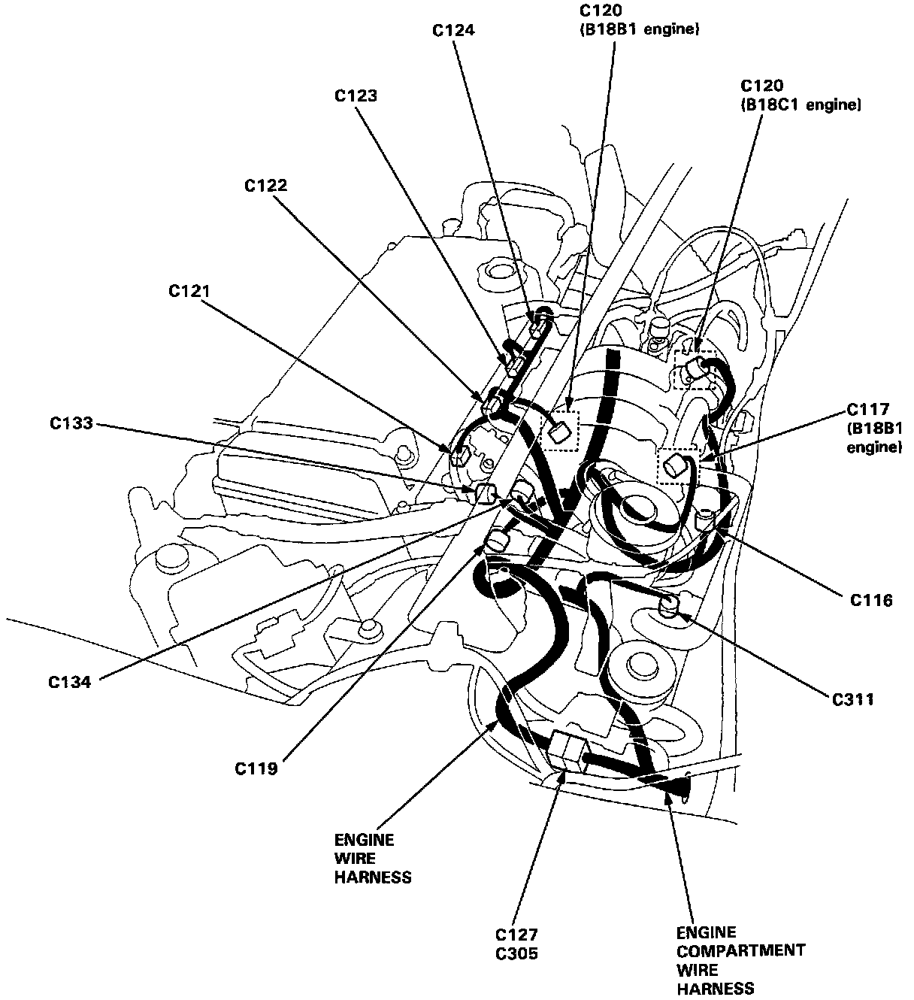
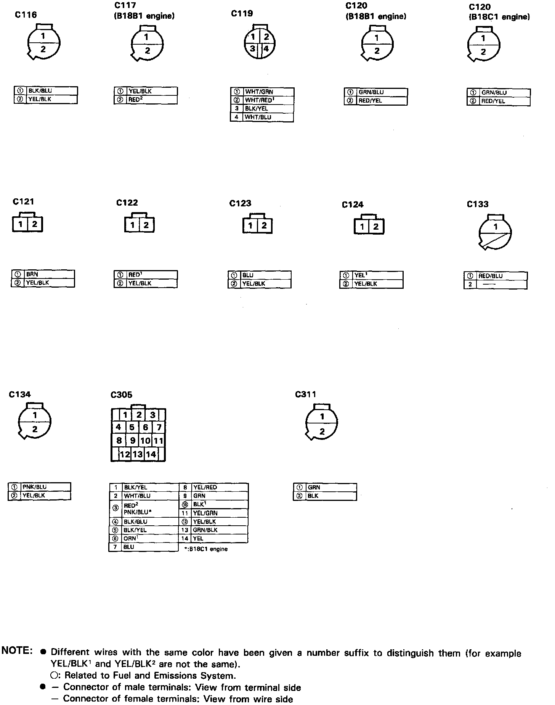

Engine Compartment
Engine Compartment Connector Locations:

Engine Compartment Connector View:

Engine Compartment Connector Locations:

Engine Compartment Connector View:

- Different wires with the same color have been given a number suffix to distinguish them (for example, YEL/BLK1 and YEL/BLK2 are not the same).
- Circled numbers in tables are also related to Fuel and Emissions System.
- Connector of male terminals: View from terminal side
Connector of female terminals: View from wire side